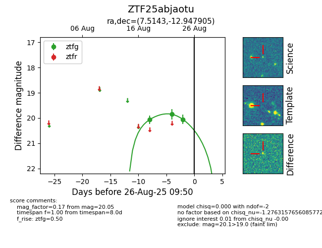

Target ZTF25abjaotu at 2025-08-26 09:50, see:
FINK: fink-portal.org/ZTF25abjaotu
Lasair: lasair-ztf.lsst.ac.uk/objects/ZTF25abjaotu
ALeRCE: alerce.online/object/ZTF25abjaotu
alt names
ZTF25abjaotu (ztf,fink)
coordinates:
equatorial (ra, dec) = (7.5143,-12.94791)
galactic (l, b) = (102.4492,-74.96286)
photometry
last ztfg=20.05
3 ztfg detections
